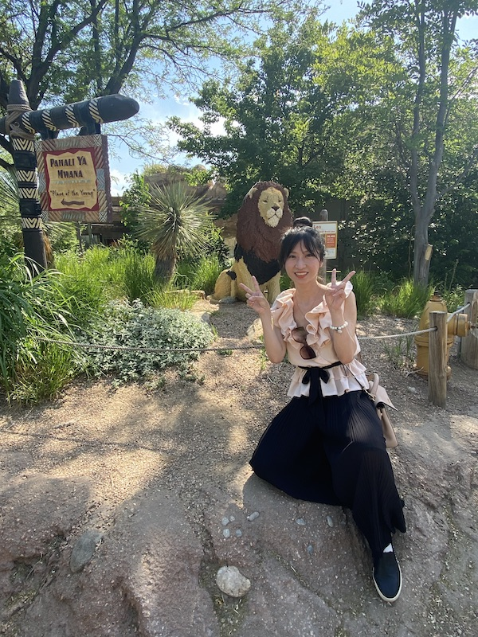

千里之行，
始于足下
--路漫漫其修远兮，吾将上下而求索--

--路漫漫其修远兮，吾将上下而求索--

西游记之后，毛毛和娇娇累趴了整整两周。上次第一天没能去成大沙漠一直算是个小小的遗憾。所以经过毛毛的筹划，娇娇体能也恢复了不少。我们又屁颠屁颠地出远门玩耍啦。虽说是三天短途游，但总共的里程数还是挺高的。今天一大早，我们就开了五个半小时，先来到了大沙丘公园。

在visitor center换好衣服后，娇娇先在离沙漠挺远的地方试了下镜头，现在的娇娇，正如含苞欲放的花朵🌺。

沙漠区前还有一条小溪流，因为要注意鞋子不能弄湿了，光脚踩沙子上还特别烫，所以我们花了很久才越过小溪。接下来就是真正的沙漠了。
在沙漠中，娇娇一身明艳的红色，煞是夺人眼球。在行走途中，不少经过的人都会投来羡慕的目光。这抹红色，给沙漠带来了生机。

又到了毛毛表演的时间了。毛毛其实姿势都挺别具风格的，就是想要与众不同，却每次都被娇娇嫌弃很傻。

在走到一个小坡的时候，娇娇喊累要休息一会儿。确实当时特别热，最麻烦的是脚很容易踩到热沙里，容易烫伤。娇娇有段路就脚直接埋在沙子里了，烫的不行。好不容易对面有人经过，我们就整理了下仪表，请人帮我们拍了难得的沙漠里的合照。

为了和在白沙公园做个对比，毛毛也拍了张一跃而起的背影照。感觉这里的沙漠奔得更高。

看着前面的沙丘，我们决定再往前走一点看看。这里的沙漠连绵起伏，全部走完不可能，但我们还是希望能多看一点不一样角度的沙丘。
到了一处新背景，毛毛觉得拍个背影照不错。娇娇于是摆了个翩翩起舞的姿势，非常美。
在沙丘的深处，我们实在热得不行，就原地休息了下，拍了个自拍照。两个人的脸都晒得红彤彤的 T_T
沙漠走完了后，我们就来到了Colorado Springs，这两天都会住在这儿。娇娇挑了家韩国饭店，在门口不远处，毛毛发现头恐龙，娇娇说要和它拍照，结果一个气球🎈掉了。。
掉了个气球有点可惜，一看到旁边的涂鸦墙娇娇又精神抖擞了，就拍了这张照片。
进了饭店，饥肠辘辘，娇娇点了海鲜饼和石锅拌饭。自此毛毛就解锁了石锅拌饭的技能。还八卦了下，感觉饭店老板是美国人，老板娘是韩国人，生了个混血儿女儿是服务员。
第二天，我们一早就从Colorado Springs出发，开了一个多小时来到了丹佛动物园。找了门口检票的小哥帮我们拍了合照，但他连拍三张都。。。黑脸。。。
今天天气还是很热的，刚进园区不久，我们就找了个没太阳的长椅坐着休息了下，然后我们发现水快喝完了。
路过一片花丛，娇娇觉得好看，也吵着要拍照照。
来到了企鹅馆，娇娇之前从来没有关注过企鹅，这次在毛毛的要求下，娇娇看了会企鹅，就当上了粉丝。这些小家伙别看个子小，各种动作都很萌，走路，仰脖子叫，扒拉胸毛。毛毛回去后就悄悄买了企鹅睡衣。
恋恋不舍地看完了企鹅，我们误打误撞地来到了山魈的地盘。一开始毛毛看到这么个丑东西，都惊得不知道叫啥，直接喊了花脸狒狒。但娇娇对它产生了巨大的好奇，脸一直贴着玻璃观察着它。毛毛找了很久角度，终于在花脸狒狒配合的时候拍到了合照。

猴子系列才是娇娇的yyds，这不，来到了大猩猩🦍的房间，跃入眼帘的就是大猩猩的大屁股。娇娇说它一直这么坐着，明显看起来不开心。大猩猩也是有脾气的呢，挺难哄的。
离开动物园前，看到了个乐高搭的狮子，感觉很新奇，拍个照就当离别丹佛动物园纪念吧。

今天是返程日，在回去的路上，娇娇提到了Pueblo也有家动物园，于是我们就顺道想先经过Pueblo动物园。打算逛完了再回去。

这个动物园虽然很小，但动物其实也不算少，我们先看到了水獭。可能是来这个动物园的人太少，水獭见到了我们，就很兴奋，不断地在水缸里来回游来游去。大概是想表演吧。

要说这个小动物园里最闪耀的明星，那非这里的企鹅莫属了。企鹅馆的待遇是最好的，一只两岁的小企鹅精力充沛，一直在和往来的游客们互动玩耍，我们用手指在玻璃上画圈圈，它也会跟着手指头游走。真的是圈了一波粉丝。

再往前走了会儿，就看到了黑黑的家猪，看介绍是越南的猪。但太黑了，有点难看。不过娇娇没有嫌弃，还去摸了摸它的猪耳朵。

猪猪的邻居是孔雀，看了臭臭的猪，一下子看到漂亮的孔雀，我们也算养了下眼。还正好运气好，遇上了孔雀开屏呢～

最后，我们看了机灵的小猕猴，娇娇非常喜欢这个小猕猴，一直嚷着要毛毛朋友圈也要发这个。